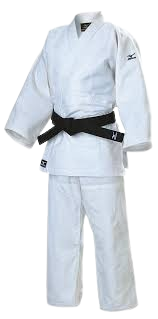
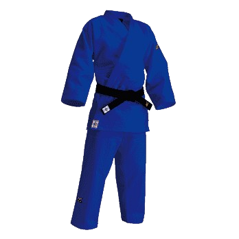

Judogi é o uniforme usado no judô, feito de algodão resistente.
É composto por:
Blusa: Parte de cima do Judogi;
Calça: Parte de baixa do Judogi;
Faixa (indica o nível do judoca);
Serve para treinar e lutar com segurança, permitindo pegadas e técnicas.
As cores mais comuns são branco e azul.